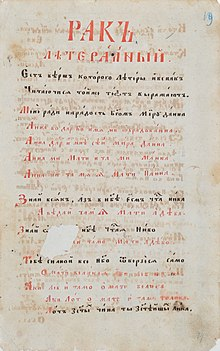

Українські вірші-паліндроми (або вірш-рак) почав писати ще в XVII
столітті Іван
Величковський, який 1691
дав визначення віршу-раку: «Рак літеральний єсть вірш, которого літери, і вспак читаючися, той же текст
виражають» («Млеко»). Професор
Києво-Могилянської
академії Митрофан
Довгалевський наводить приклади
паліндромів у своїй праці «Hortus
Poeticus» (1736). В
казці «Лис
Микита» Івана
Яковича Франка мавпа Фрузя
розмовляє «чарівною» паліндромною мовою (пісня
12).
У сучасній поезії розрізняють вірш-паліндром і вірш-паліндромон. Вірш-паліндром складається з
рядків-паліндромів. Вірш-паліндромон — це єдиний від початку до кінця паліндром.
Прості слова, які однаково читаються як зліва направо, так і справа наліво,— очевидні: око, дід, піп,
наган, Пилип, радар, ротатор. Важче придумувати речення, які даватимуть однаковий зміст при прямому та
зворотному читанні, як-от: «Я несу гусеня» чи «Де помити мопед?» Проте лише майстрам слова вдається з
таких симетричних рядків вибудувати змістовний та образний вірш. I все ж такі в українській літературі
знайшлися, про що засвідчили збірки: «Око» Миколи
Мірошниченка, «Віче мечів» Анатолія Мойсієнка,
«Паліндромони» Івана
Лучука («Епос і нині сопе» з цієї збірки — це найдовший в українській мові
паліндромон на 3333 знаків[4]), «Не здуру ґуру дзен» Назара Гончара[5], «Періодична система слів»[6] Івана
Іова, роман-паліндром «Чар Драч» Олександра
Шарварка, «Вітражі жартів» Любові
Сердунич[7], «Тут і зараз»
Михайла
Зарічного, «Життя у вічності» Петра Штабалюка, комбінаторика Віктора Марача[8],
паліндромний
корпус Романа Пирога (збірки «ШЕ», «Атома самота», «Soulfluous», «Мі7», «Amene Enema / З ума - гамуз»,
«Simetra», «Нуль лун»)[9].
Жанр раку літерального, який в українській літературі започаткував Іван Величковський, 1977 року в
дитячій збірці «Чарівний глобус» відродив Володимир
Лучук (батько Івана Лучука). У діаспорі приблизно у
той самий час написала паліндром «Тупак і капут» поетеса Ганна
Черінь. Відомо також, що Микола
Лукаш склав
два паліндроми у 1940 році. Першим активним і, ймовірно, найвидатнішим українським поетом-паліндромістом
став Микола
Мірошниченко, включивши 13 паліндромів до збірки «Око», виданої у 1989 році. Важливий внесок в
українську паліндромію здійснили члени літературної групи ЛуГоСад (І.Лучук,
Н.Гончар,
Р.Садловський).
Нині
в Україні понад 50 поетів мають у доробку раки літеральні. У 1991 засновано «Об'єднання голінних
ентузіастів рака літерального (ГЕРАКЛІТ)», що
свідчить про те, що із банальної спокуси здивувати загал і
колег, рак літеральний доріс до серйозного явища сучасної поезії. В 1993 у львівській газеті
«Ратуша» і
часописі «Четвер» оприлюднено Декларацію Планетарної Управи Паліндромії (ПУП). У 2011 році вийшла друком
книга «У сузір'ї рака. Антологія української паліндромії» (видавництво «Богдан», серія «Дивоовид»,
упорядники: М.Мірошниченко, І.Лучук), до якої увійшли твори 46 авторів[10]. В 2015
році «Видавництво
Старого Лева» видало книжку для дітей «Паліндроми» (ілюстрації Надії Каламєєць)[11].
Rak literalny